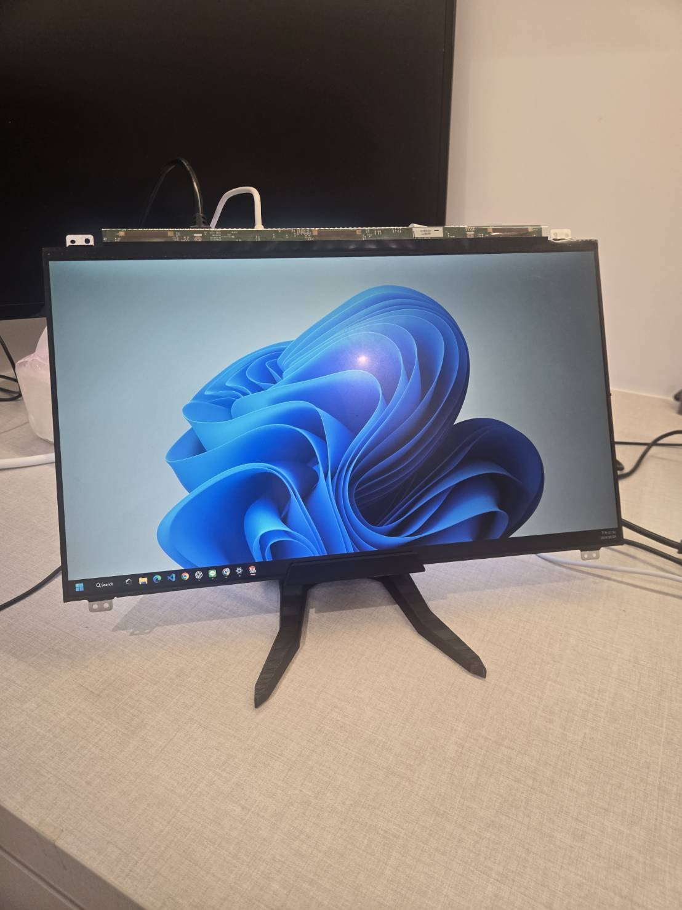

Po Chun Tseng / Project gallery
Ideas are just the spark.
Making them work is the art.
I build robots, flight systems, and software tools. Explore the builds, tests, and debugging behind each project.
12 projects · 2 studies01 / Competition robotics · Team 8020
FRC Engineering
Four connected projects behind our competition robots.

2026 · Modeling + controls
Shoot on the Move
Ballistics and velocity compensation for aiming while driving.

2025–2026 · State estimation
Multi-Camera Localization
AprilTag observations and odometry combined into one robot pose.

2025 · Computer vision
Game-Piece Object Detection
From labeled training images to testing a detector on the robot.

2025 · Robot software
LabVIEW-to-Java Migration
Subsystem integration, command conflicts, and robot-loop debugging.
02 / Independent engineering
Robots, flight & hardware
Personal builds, from the first assembly to real-world testing.

2026–Present · In development
Autonomous Delivery Drone
A custom PX4 platform: mechanical design, flight tuning, and onboard vision.

In development · Robotics
LiDAR Guided Robot
An ESP32 mecanum base with manual control; target following is the next milestone.

Hardware · Printed stand added
Standalone Monitor Conversion
A salvaged ThinkPad panel and a compatible controller, now supported by a 3D-printed stand.
03 / Software
Apps for my own workflow
Tools I built with AI coding assistance to make everyday tasks easier.

Mobile web + desktop sync
OmniSync
My desktop tasks and calendar, available when I’m away from my desk.

Chrome extension
Side Notes
A browser side panel for keeping notes beside the page I’m reading.

Engineering tools
PX4 Flight Diagnostics
Turning raw flight logs into reports I can use to investigate unstable flights.

Learning application
SAT Reading & Writing Lab
Question practice, explanations, and mistake review in one place.

Personal study tool
SAT Vocabulary Mastery
Combining quizzes, personal memory notes, and spaced review.
04 / Research
Experiments & system identification
Two studies investigating the behavior of physical systems.
Experimental mechanics
Flywheel Surface Research
Comparing launch-trajectory consistency across surfaces, speeds, angles, and ball-compression groups.

FRC control systems · Team research
System Identification
FRC Essay Competition
Comparing SysId feedforward estimates with manual measurements on two robotic-arm motor setups.
I’m Po Chun Tseng. I’m interested in what happens when mechanics, electronics, and software have to work together. These pages document what I built, what I tested, and what I’m still working on.